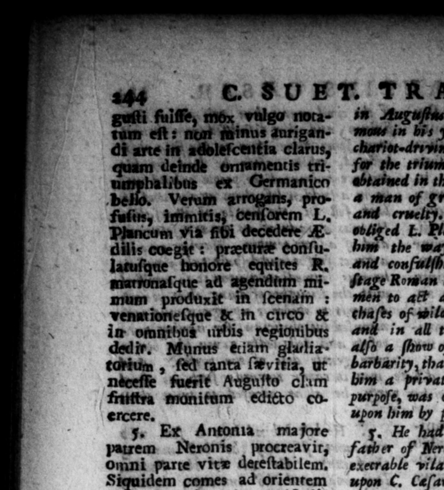

_ * + N ” > 2 A. * * 93 = : oY 8 n FE 4 92 hs Ea . SU ET. TRANQS ö i fulſſe, mon vulgo nota- in Auguſfas will, being o' E ft form a mig ins — ü, in bys yu * eee in lefcentia claru chariot · dri vi an 4 | hen deln — 2 for the — ornaments Ur ry | : balibus ex Germanico ebtained in the German war. But be m bells. verum ö deb.” Von rigs fr. em of Fs ny rope vis fibi decedere E. obliged E. Planes the conifer i give dilis coeght : „ conſu- hw the way and in bis 1 #torſbiy lacuſque © equtites R. — be hong he ubm the marfonaſque ad atem mi- tage Roman % and married woe | mum produit in 'ſeendin : #'to a# 4 mimick picce, He pave. venntioneſque & in ce & — gs — beaſts both in the Cireugy/ in omnibus wtbis © regionibus in all the wards of the oy: as ded ir. Munus etiam glartia - 4% 4 ſhow of Gladiators, hu with thity tartum, fed" tanta ſwvitia, ut batbarity, that Anguſtus having gives niceſſe fuerit Auguſto clim bim 4 private reprimand” for it 7% | friifiva monitum edicto co. purpoſe, was ob to lay 4" rem ercere. | uon him by proclamation, | . Ex Antonia majore 1 He had by the elder Antonia the patrem Neronis procreavir; father of Nero, in every part of lite ## omni parte vite deteſtabilem. exerrable vilain e for in bis aten, Siquidem comes ad orientem wpon C. Ceſar into the Eaft, he billed & C. Czſaris juvenis, oceiſo li- freed- man of his, becauſe he refuſed % berto fun, quod porare quan- drink as much a: be bid m and betum Jubebarur recuſarar, di- ing. thereupon diſcarded by Cain, be ' miſſus e cuhorte amicorum ni- mended wot his manners at all. For in hilo modeſt ius vixit. Sed & 4 village = the Appian road he gal. in vir Appiz vico fe lope bis chariot over a poor bay, and yerum citatis jumenris hand cruſhed bim all to pieces. And at gnarus obtrivit: & Rome, Nome he firuck ut an eye of 4 Roman” medio Foro cuidam equiti Ro, Eaight in the forum, only for ſome free' liberius Jurganti oculum eruit: language be gave him in a rag periidi vero tante, ut non that happened betwixt them. He was modo argentarios pretiis rerum tos ſo very knaviſÞ. that be not coemtarum, ſed & in prætura cheated ſome bankers of the re of Foods mercede palmarum aurigarios he bowught of them; but in his pretor. frauda verit : Notatus ob hc ſp, be defrauded the furniſhers of cha& - ſonoris joco, querentibus, riuts for the Urcenſian games of the . dominis factionum, repreſen zes due to them for the weng, 24nd 4 in poſlertum lalixit. And being bantered by tis foſter Majeſtatis quoque & adulte- about it; „on 4 complaint made riorum, inceftique cum fo- 7 them, e rot 4 lan paſſed, rore Lepida ſub exceſſu Tibe- hat for the future they ſhould alrit reus, mutatione * n ways be — id them. evaſit : decefſirque Pyrgis A little before the de of Tiberius he morbo aquze intercutis, ſub- was proſecuted for treaſon, adultery" lato filio Nerone ex Agrip- with ſeveral women, aid inces with his pina Germanico genita. er Lepida; but *ſtaped by a — of the times, and died of 4 drobſy at ;Pyrgi, leaving behind bim bis ſo Mero, whith be had by ASrippina then daughter of Germanicus. 6. Nero natus eſt Ancii poſt ix 6. Nero was born at Antjum, nine menſ& quam Tiberius exceſſit, months after the dea h of Tiberind, u on xviii Ralendas Januarias : the eighteenth if ctheCglends of Fanuary,' tamum quod e te Sole, jut as the ſun roſe, that beatins — *
